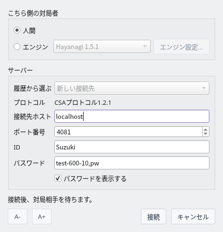
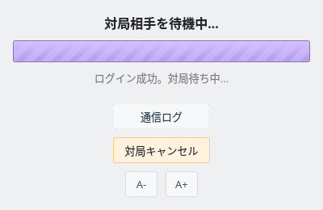
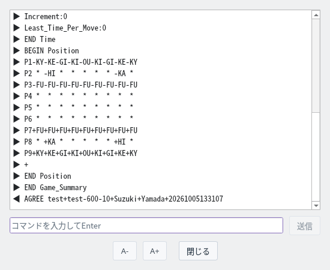
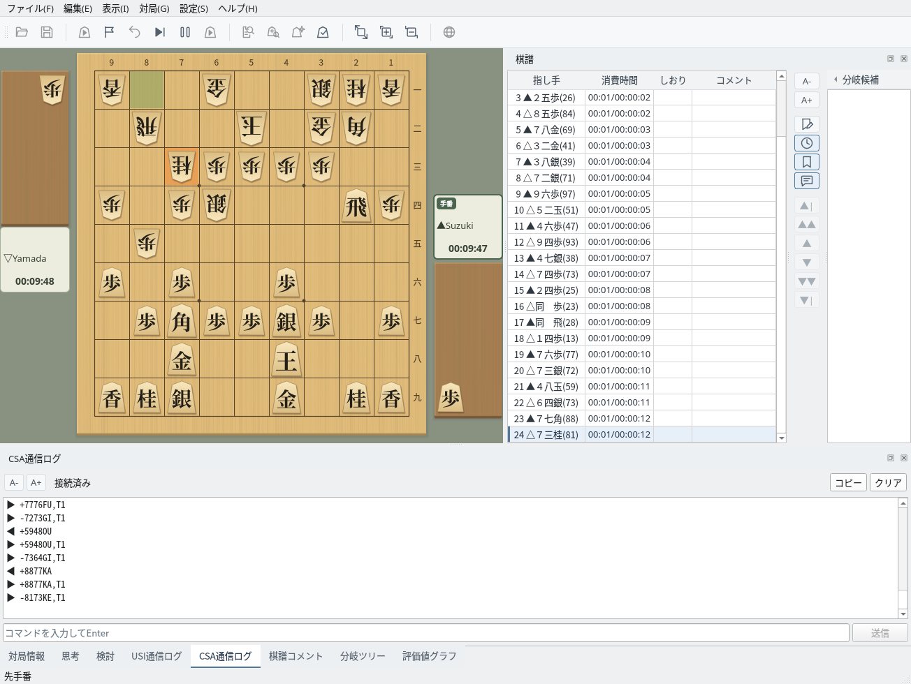
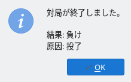

CSAプロトコル対応サーバーとのネットワーク対局
サーバーの接続先と、こちら側の対局者を設定します
「対局」→「通信対局（CSA）…」を選ぶと、通信対局ダイアログが開きます。対局や解析をしていないときに使えます。
| こちら側の対局者 | 自分で指す場合は「人間」、USIエンジンに指させる場合は「エンジン」を選びます。エンジンは「設定」→「エンジン設定」で登録したものから選び、「エンジン設定...」でオプションを変更できます。 |
| 履歴から選ぶ | 以前に接続した接続先（最大10件）を選ぶと、接続先ホスト・ポート番号・IDが入力されます。 |
| プロトコル | CSAプロトコル1.2.1で接続します。 |
| 接続先ホスト・ポート番号 | サーバーのホスト名またはIPアドレスと、ポート番号（既定は4081）です。 |
| ID・パスワード | サーバーにログインするIDとパスワードです。パスワードは設定ファイルに保存されません。 |
入力が足りない項目があると、ダイアログの下に「接続先ホストを入力してください。」のような案内が表示され、「接続」は押せません。接続先ホスト・ID・パスワードに空白は使えません。

通信対局ダイアログ：ローカルのshogi-serverに人間として接続する設定
持ち時間などの対局条件はサーバーが決めるため、ShogiBoardQでは設定しません。shogi-serverでは、パスワード欄に「ゲーム名,パスワード」を入力します。同じゲーム名でログインした2人が対局します。
| ゲーム名 | 「名前-持ち時間-秒読み」の形式で、時間は秒単位です。例：test-600-10 は持ち時間10分・秒読み10秒 |
| 加算（フィッシャー） | 末尾に F を付けると、秒読みの代わりに1手ごとに時間を加算します。例：test-300-10F |
| 先手・後手の希望 | ゲーム名の後に -B（先手）または -W（後手）を付けます。例：test-600-10-B,pw |
自分のパソコンでshogi-serverを動かしている場合は、接続先ホストに localhost、ポート番号に 4081 を指定します。
サーバーにログインし、対局相手を待ちます
「接続」を押すと待機画面が開き、サーバーへの接続、ログイン、対局相手の待機と進みます。保存していない棋譜がある場合は、先に破棄してよいかの確認が表示されます。
対局相手が見つかるとサーバーから対局条件が届き、自動で同意して対局が始まります。「対局キャンセル」を押すと待機をやめ、ログアウトします。

待機画面：ログインに成功し、対局相手を待っている
「通信ログ」を押すと、サーバーとの送受信を表示するウィンドウが開きます。▶は受信、◀は送信した行で、LOGIN のパスワードは「*****」と表示されます。
接続中は下の欄にコマンドを入力し、Enterキーまたは「送信」でサーバーへ送れます。ログは最大5000行まで保持します。

通信ログ：対局条件（Game_Summary）を受信し、AGREE で同意したところ
通常の対局と同じ画面で指し手を進めます
人間で対局する場合は、自分の手番に盤上の駒をクリックして指します。相手の指し手はサーバーから届いて盤面に反映され、棋譜欄に指し手と消費時間が記録されます。対局時計にはサーバーから届いた持ち時間が表示されます。
画面下の「CSA通信ログ」タブでは、送受信の内容と接続状態を確認できます。「コピー」でログ全体をコピー、「クリア」で表示を消去でき、入力欄からコマンドを送ることもできます。「対局情報」タブには対局者名とサーバーの持ち時間が記録されます。

対局中：CSA通信ログタブでサーバーとの送受信を確認しながら対局
こちら側の対局者を「エンジン」にすると、エンジンがサーバーの持ち時間に従って自動で指します。思考・USI通信ログ・評価値グラフも通常の対局と同じように表示されます。
「対局」→「すぐ指させる」で、エンジンの思考を打ち切ってその時点の最善手を指させます。エンジンが投了するとサーバーへ投了を、入玉宣言するとサーバーへ宣言を送ります。
自分の手番に「対局」メニューの「投了」「中断」「入玉宣言」を選ぶと、サーバーへ送信します。入玉宣言は確認のあとで送ります。相手の手番では送れません。
勝敗、時間切れ、入玉宣言の成否はサーバーが判定します。画面の時計が0になっても、サーバーが終局を伝えるまで対局は続きます。中断に対応していないサーバー（shogi-serverなど）では、中断が反則と判定されることがあります。
対局が終わると結果と原因が表示され、棋譜欄に終局（「▲投了」など）が記録されます。棋譜は自動では保存されないため、残す場合は「ファイル」メニューから保存してください。終局後は棋譜を再生したり、次の通信対局を始めたりできます。
対局中に通信が切れた場合や、エンジンが指し手を返せなくなった場合は「中断」として対局を終えます。

終局：結果「負け」、原因「投了」
CSAプロトコルに対応したサーバーで通信対局できます